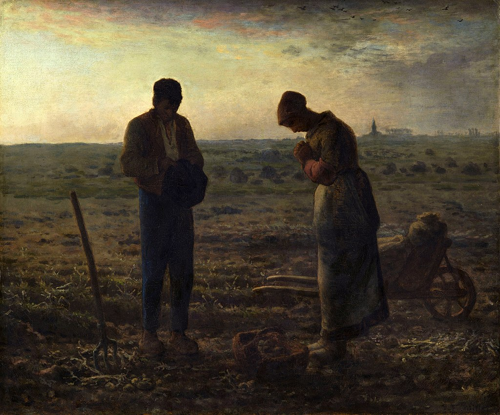
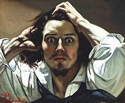
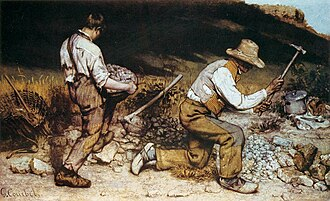
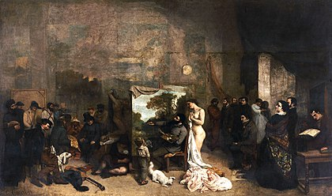
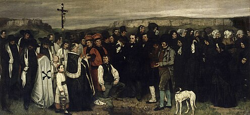
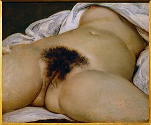

realism: 1840-1870
intro
a lot of painters around 1840 found that romanticism had a lot of issues. they were against the subjective and emotional way romantic painters worked and how they tried to flee from reality.
although the technique of the realists was very similar to that of the romantics, a lot changed.
the realists painted everyday subjects, for the first time showing the working class just because it's reality & not because there's some biblical story behind it or whatever. landscapes were also very popular, though more in the barbizon school of art (see below).
painters could also now work outside. this was thanks to the invention of paint tubes! artists could directly paint what they see, or sketch it outside and paint in their studios. this all influenced the later impressionists.
as always, new things provoke criticism. le salon wasn't a fan of the subjects of the artworks, but especially not of the size of the canvases that some artists decided to work on. this depends on the artists of course, but for example some paintings of courbet were life sized!
- subjects are realistic and contemporary; not mythical, biblical or historical, but usually people from the working class, farmers or landscapes
- simple and well balanced composition
- dark, earthy colours
- titles are descriptive and not symbolical
- large canvases! until then this was only for historical paintings
- often simplified the figures
artists & their work
barbizon school of art (1830)
short biographyyes yes i know technically not an artist but a group, but whatever.
the school of barbizon are the predecessors of the realists. they lived in barbizon, a village by fontainebleau, to paint landscapes and the country life.
though they are called a school, they didn't have formal bonds or a collective goal or manifest. they did all have an aversion of academic paintings (because they looked too artificial) and of mechanisation and industrialisation of the cities.
- nature is the main theme! before, nature was only a decor, designed in art studios, and not realistic. now they paint nature as a subject.
- they sketch outside and paint in their studio. due to this, the nature they picture is much more realistic.
- brown, dark green and yellow are the most used colours.
- very free and loose brushwork, like the romantics did.
more fan of the later realists, but they really built the ground for that so thanks. idk just a bunch of white dudes living in a town together to paint. meh.
we only discussed millet in class. his section is next! technically daumier also belongs to this time period, but his subjects are more aligned with realism.
millet
short biographyhe came from a rich farmers family in normandy, and most of his paintings depict that area. the relationship between nature and humans is prominent in his works, as well as scenes from the countryside.
the realists and later artists, like Van Gogh, were big fans of his work.
idk don't have much to say about him. cool paintings. shocked some rich assholes by making a painting of poor people. based. can't find much about his personality so idk.
his works
des glaneuses "the gleaners" in english. here millet shows three women reaping stray stalks of wheat. this work was mostly done by poor women and children. in the back you can see the harvest being collected.
"the gleaners" in english. here millet shows three women reaping stray stalks of wheat. this work was mostly done by poor women and children. in the back you can see the harvest being collected.shocker shocker, the salon hated it! the painting reminded them their entire society was built on the poor people's work, and landowners linked this with the growing rise of the Big Evil socialism. to quote from wikipedia: "The depiction of the working class in The Gleaners made the upper classes feel uneasy about their status. The masses of workers greatly outnumbered the members of the upper class. This disparity in numbers meant that if the lower class were to revolt, the upper class would be overturned." mimimimi typical right wingers talk
ALSO, even though the painting is "only" 3.8 cm × 111.8 cm, this is a pretty big painting size to show labor & poor people!
la sieste
 also known as la méridienne. farmers asleep against hay, cows in the back, typical countryside business! van gogh made a painting which is basically this, flipped horizontically, in his own style.
also known as la méridienne. farmers asleep against hay, cows in the back, typical countryside business! van gogh made a painting which is basically this, flipped horizontically, in his own style.l'angélus
 the angelus is a christian prayer which was prayed three times a day - nowadays it's gotten out of use. different wikipedia pages say something else, but i'm pretty sure you were supposed to recite three hail marys and three our fathers. here, millet shows the deeply religious nature of the countryside. fun fact, he himself wasn't much of a church go-er! he said he was thinking about his grandmother while painting it, who always stopped working to pray the angelus. i can't find many sources on it, but in millet said in the previous quote that the angelus was for the dead. not sure if that means mourning or praying they get to go to heaven though.
dalí made a painting about this with one hell of a name and i don't care about dalí enough to look it up but yeah just so you know!
he has been described at leftist and i wanted to mention that, but keep in mind that he was described as such in 1889 and by angry right wingers.
banksky also made something about this work, so i'll add that once i find more info!!
courbet
short biographyfun facts: he called himself the proudest and most arrogant man in france. he was an anarchist & was a part of the paris commune. got arrested for that and made a self portrait in jail. he constantly pissed off critics by painting nudes and sex workers and dead bodies and yeah.
my humble opinioni really like his work!
his works
self portrait clair obscur my beloved. this was still in his romantic period, in the beginning of his carreer.
les casseurs de pierres
 the story goes he met these people on the street and asked them to come pose for him in his atelier. their faces aren't visible, probably to represent the broader working class community instead of these specific men.
l'atelier du peintre
 full title: L’Atelier du peintre. Allégorie Réelle déterminant une phase de sept années de ma vie artistique (et morale). was gonna say it's longer than will wood's songtitles but i'd have to factcheck that.
tba
un enterrement à ornans
 "a burial in ornans", his birthplace. back then they only painted funerals of famous people, but this is an anonymous funeral. more tba.
l'origine du monde
 "the origin of the world". tba.
i love all of his nude paintings because they're not idealised bodies - which is obvious because it's realism lol. idk they're really important to me. the people shown seem like actual people, like he meant to paint a Person, not just a person in a painting. if you want to see more, here is a link to the wikipedia gallery! scroll a bit to find the nude section :)